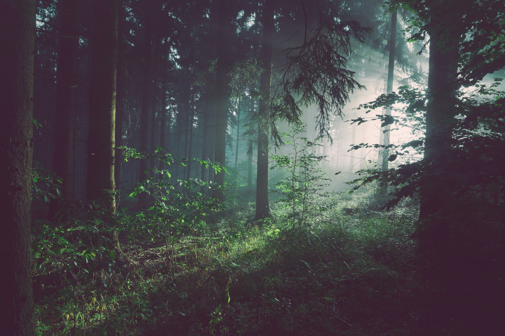
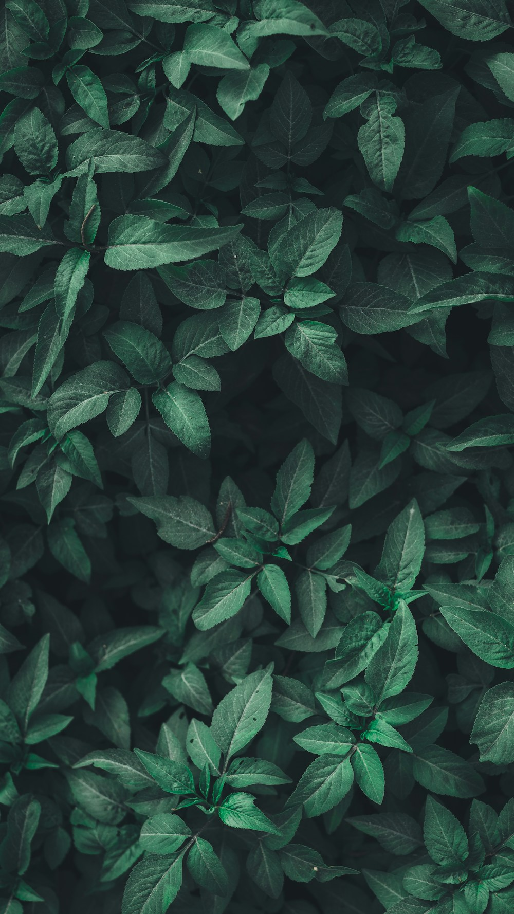

TRIỂN LÃM SỐ VỀ SỰ SỐNG
Đi sâu vào
thế giới sống.
Có cả một vũ trụ trong chiếc lá.
Hãy đến gần hơn. Và nhìn bằng sự tò mò.
Sinh học 10 · 11 · 12 / Từ vi mô đến sự sống quanh ta
VNS / LIVING COLLECTION01 — KHÔNG GIAN KHÁM PHÁ
++
BỘ SƯU TẬP SỰ SỐNG 01 / 02
Lục lạp Nhân tế bào Kéo để xoay · Chạm để khám phá
THẾ GIỚI Ở THANG HIỂN VI
Một tế bào. Vạn điều kỳ diệu.
ĐANG TRƯNG BÀY
HỌC TỪ SỰ TÒ MÒ. HIỂU QUA TRẢI NGHIỆM.Cuộn để khám phá
01 / CHỌN ĐIỂM XUẤT PHÁT
Hôm nay, bạn tò mò điều gì?
Mỗi câu hỏi là một cánh cửa dẫn vào thế giới tự nhiên.
02 / NHÌN ĐIỀU CHƯA TỪNG THẤY
Không chỉ là hình trong sách.
Xoay một vòng. Tách một lớp. Hiểu thêm một điều.

VN / BOTANICAL STUDY — 003 BÊN TRONG MỘT CHIẾC LÁ
Ánh sáng trở thành
sự sống.
sự sống.
CO₂ + H₂O → Chất hữu cơ + O₂DƯỚI TÁC ĐỘNG CỦA ÁNH SÁNG
03 / PHÒNG THÍ NGHIỆM MỞ
Thí nghiệm tương tác · Lớp 11Nếu chiếc lá
thiếu ánh sáng?
Kéo thanh ánh sáng, thay đổi lượng CO₂ và quan sát điều gì xảy ra. Khoa học bắt đầu khi bạn hỏi “nếu như…”.
Tự điều chỉnh môi trường So sánh kết quả thí nghiệm Lưu phát hiện vào sổ tay
Không cần dụng cụ. Chỉ cần sự tò mò.04 / MỖI KHÁM PHÁ ĐỀU ĐỂ LẠI DẤU VẾT
Kiến thức lớn lên.
Khu vườn cũng vậy.
Mỗi bài học hoàn thành là một mầm xanh trong hành trình của bạn. Lưu điều thú vị, thử sức và nhìn mình tiến bộ mỗi ngày.
HỘ CHIẾU KHÁM PHÁ
0 XPChào bạn, nhà thám hiểm!
Hành trình đang nảy mầm0 / 6 bài học
Mầm tò mò
Nhà thực nghiệm
Người kết nối
“Ở đâu có sự sống,
ở đó có điều để khám phá.”